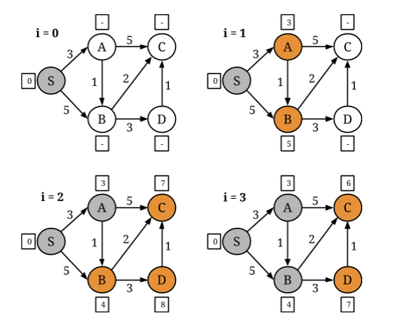
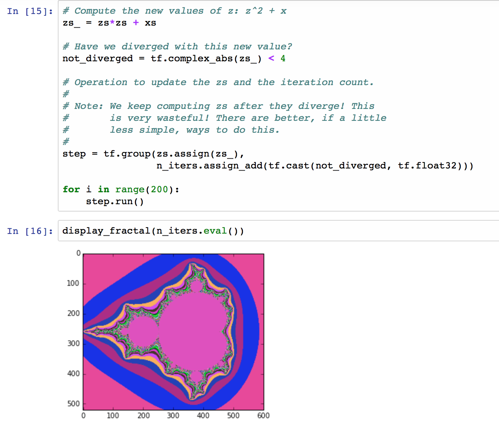
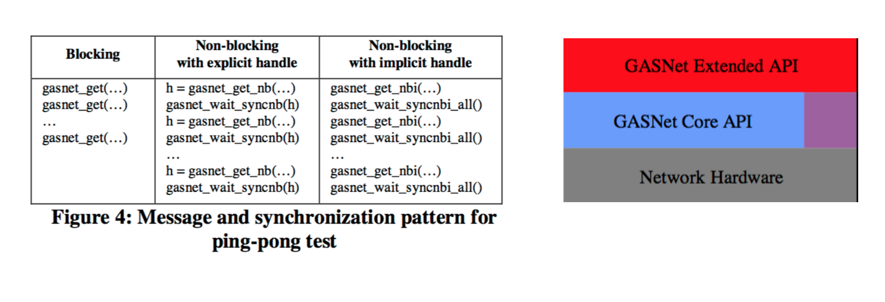

name: title layout: true class: center, middle, title count: false --- ##Finding MPI's Place In Today's Big Computing Jonathan Dursi<br/> Senior Research Associate<br/> Centre for Computational Medicine<br/> The Hospital for Sick Children<br/> https://github.com/ljdursi/EuroMPI2016 --- name: my-background-1 layout: false .left-column[ ## Who Am I? ### Old HPC Hand... ] .right-column[ Ex-astrophysicist turned large-scale computing. - Large-scale high-speed adaptive reactive fluid fluids - DOE ASCI Center at Chicago - ASCI Red - ASCI Blue - ASCI White - FORTRAN, MPI, Oct-tree regular adaptive mesh ] ??? Before we start, let me tell you a little about where I'm coming from. This story is probably pretty familiar to many of you - I started off doing science with computing, and ended up drifting to the other side of that divide, doing computing to support science. I was doing pretty pretty standard HPC stuff - high speed flows (so explicit methods), reactive, adaptive grid, FORTRAN with some C and python, that sort of thing. -- .right-column-cont[ - Joined HPC centre after postdoc - Worked with researchers on wide variety of problems - Got interested in genomics: - Large computing needs - Very interesting algorithmic challenges ] ??? After doing a postdoc in Toronto, I moved into the HPC Centre there, working with them and Compute Canada - a little like PRACE or XSEDE - and working with a lot of different researchers doing a lot of different problems. Before too long, I started becoming interested in genomics - partly because it was the new frontier, with fascinating and deep algorithmic challenges, but also required very large-scale computing to accomplish its promise. --- name: my-background-2 layout: false .left-column[ ## Who Am I? ### Old HPC Hand... ### Gone Into Genomics ] .right-column[ Started looking into Genomics in ~2013, made move in 2014 - Ontario Institute for Cancer Research - Working with Jared Simpson, author of ABySS (amongst other things) - First open-source human-scale de novo genome assembler - MPI-based ] ??? I began working in genomics with Jared Simpson, who amongst other accomplishments was the author of ABySS, one of the very early large-scale de novo genome assemblers from what we now call short reads. It tackled large - including human - genomes by using distributed memory, using MPI. So it sounds like I found a pretty good niche in Genomics for an HPCer, right? -- .right-column-cont[ - "Never Again" - ABySS 2.0 just came out, with a new non-MPI mode ] ??? Not quite. ABySS 2.0 just came out, with a new non-MPI mode which will almost certainly become the default after the kinks are worked out. There are absolutely no plans by any of the development team to develop new MPI-based algorithms or tools --- name: my-background-2 layout: false .left-column[ ## Who Am I? ### Old HPC Hand... ### Gone Into Genomics ] .right-column[ In the meantime, one of the leading standards for genome analysis, GATK, has just announced that version 4 will support distributed cluster computing — using Apache Spark. <img src="gatk-spark-news.png" width=75%> ] ??? In the meantime, one of the leading standards for genome analysis, GATK, has just announced that version 4 will support distributed cluster computing — using Apache Spark. --- name: begin layout: false class: center, middle, inverse ## MPI's Place In Big Computing Is Small, and Getting Smaller ??? How did we get here? This is the background I'm coming from when I talk about MPI's place in modern big computing - even big scientific computing. In the broader sweep of large technical computing, MPI's place is small, and getting smaller. --- layout: false .left-column[ ## Top500 vs The Cloud ### 2013 ] .right-column[ .right[<img src="2013-top500-hyperscalers.png" width=75%>] ] ??? You can see this when looking at who is computing and where they are doing their computations - when I started looking at big scientific computing more broadly in 2013, the top500, where most MPI tasks are run, was already starting to be a fairly small fraction of the available computing out there... --- layout: false .left-column[ ## Top500 vs The Cloud ### 2013 ### 2016 ] .right-column[ .right[<img src="2016-top500-hyperscalers.png" width=75%>] ] ??? And it's only gotten smaller as time goes on. --- name: begin layout: false class: center, middle, inverse ### MPI's Place In Big Computing Is Small, and Getting Smaller ## but it doesn't have to be this way ??? The underlying reason is _good_ _news_ — this is the most exciting period of time ever in large-scale computing, with new disciplines, new data sources, and new types of hardware sprouting up everywhere in just a decade. There's so much to do! During this big-computing Cambrian explosion we're experiencing, MPI's "steadfastness" has been welcome but is holding it back from being part of this growth. But that need not be the case - the MPI community broadly has much to learn and much to contribute to these other models **if it chooses to do so**. --- layout: false .left-column[ ## Outline ] .right-column[ - A tour of some common big-data computing problems - Genomics and otherwise - Not so different from complex simulations - A tour of programming models to tackle them - Spark - Dask - Distributed TensorFlow - Chapel - A tour of data layers the models are built on - Akka - GASNET - TCP/UDP/Ethernet: Data Plane Development Kit - Libfabric/UCX - Where MPI is: programming model at the data layer - Where MPI can be ] ??? It's very difficult to describe what place MPI occupies in the landscape without drawing a map, so what I want to do for the beginning of our time together is to walk through these new territories with you. I want to talk about some common big data analysis tasks and point out how similar they are to familiar simulation tasks. Then I'd like to show some of the programming models that are springing up - both outside of HPC and within it - are tackling these problems. These higher level programming models themselves take advantage of lower-level communications frameworks to implement the distributed computation. Understanding what these frameworks provide and how they enable the higher level models is crucial to understanding MPI's potential role. Once we've sketched out the map, I want to describe the place I see MPI as occupying now — and the attractive neighbouring vacant land that we can occupy if we want. --- layout: false class: center, middle, inverse ## The Problems Big Data Frameworks Aim To Solve --- .left-column[ ## Big Data Problems ] .right-column[ Ultimately Big Data problems are more or less the same problems we face in HPC although in a different context. - Large scale network problems - Graph operations - Similarity computations, clustering, optimization, - Linear algebra (amongst others) The Big Data crowd hit problems of dealing with wildly irregular, unstructured, dynamic data structures that we've up til now been able to avoid in simulation... but may not be able to on the road to Exascale. - Irregular data lookups: - Key-Value Stores ] --- .left-column[ ## Big Data Problems ### Key-value stores ] .right-column[ In simulation, you normally have the luxury of knowing exactly where needed data is, because you put it there. Maintained with global state, distributed state, or implicitly (structured mesh). .center[</img>] ] --- .left-column[ ## Big Data Problems ### Key-value stores ] .right-column[ With faults, or rapid dynamism, or too-large scale to keep all state nearby, less true. Much of genomics involves looking data up in string indices or hash tables. - Good/simple/robust distributed hash tables within an application would be extremely valuable. Begins to look a lot like distributed key-value stores in big data. Highly irregular access (don't know where you're sending to, receiving from, when requests are coming, or how many messages you will receive/send) is not MPI's strong suit. .center[</img>] ] ??? As data sources get larger and cheaper - and so less reliable - an awful lot of data analysis will look like this too The developers of in-memory NoSQL databases view performance as crucial, and are enormously concerned with latency - especially since a query (and especially an update) may involve several messages between participating nodes. However MPI is *not* used for this, even internally to the cluster. --- .left-column[ ## Big Data Problems ### Key-value stores ### Linear algebra ] .right-column[ Almost any sort of numeric computation requires linear algebra. In many big-data applications, the linear algebra is _extremely_ sparse and unstructured; say doing similarity calculations of documents, using a bag-of-words model. If looking at ngrams, cardinality can be enormous, no real pattern to sparsity .center[<img src="assets/img/bag-of-words.png" width="75%"></img>] ] --- .left-column[ ## Big Data Problems ### Key-value stores ### Linear algebra ### Graph problems ] .right-column[ As with other problems - big data graphs are like HPC graphs, but more so. Very sparse, very irregular: nodes can have enormously varying degrees, _e.g._ social graphs .center[<img src="assets/img/social-graph.png" width=75%></img>] https://en.wikipedia.org/wiki/Social_graph ] --- .left-column[ ## Big Data Problems ### Key-value stores ### Linear algebra ### Graph problems ] .right-column[ Generally decomposed in similar ways. Processing looks very much like neighbour exchange on an unstructured mesh; can map unstructured mesh computations onto (very regular) graph problems (but graphs more regular). If anything, these [Pregel](https://blog.acolyer.org/2015/05/26/pregel-a-system-for-large-scale-graph-processing/)-type graph methods might be a little naive - overly synchronous. .center[</img>] https://flink.apache.org/news/2015/08/24/introducing-flink-gelly.html ] --- .left-column[ ## Big Data Problems ### Key-value stores ### Linear algebra ### Graph problems ] .right-column[ Calculations on (_e.g._) social graphs are typically very low-compute intensity: - Sum - Min/Max/Mean So that big-data graph computations are often _more_ latency sensitive than more compute-intensive technical computations ⇒ lots of work done to reduce communication/framework overhead .center[<img src="assets/img/graphx-tables_and_graphs.png" width=75%></img>] https://spark.apache.org/docs/1.2.1/graphx-programming-guide.html ] --- .left-column[ ## Big Data Problems ### Key-value stores ### Linear algebra ### Graph problems ### Commonalities ] .right-column[ The problems big-data practitioners face are either: - The same as in HPC - The same as HPCish large-scale scientific data analysis - Or what data analysis/HPC will be facing towards exascale - Less regular/structured - More dynamic So it's worth examining the variety of tools that community has built, - To see if they can benefit our community - To see what makes them tick - To see if we can improve them ] --- layout: false class: center, middle, inverse ## Big Data Programming Models --- layout: false class: center, middle, inverse ## Spark: http://spark.apache.com --- .left-column[ ## Spark ### Overview ] .right-column[ Hadoop came out in ~2006 with MapReduce as a computational engine, which wasn't that useful for scientific computation. * One pass through data * Going back to disk every iteration However, the ecosystem flourished, particularly around the Hadoop file system (HDFS) and new databases and processing packages that grew up around it. .center[<img src="assets/img/mapreduce.png" height=400px></img>] ] --- .left-column[ ## Spark ### Overview ] .right-column[ Spark is in some ways "post-Hadoop"; it can happily interact with the Hadoop stack but doesn't require it. Built around concept of resilient distributed datasets * Tables of rows, distributed across the job, normally in-memory * Immutable * Restricted to certain transformations - map, reduce, join, etc. * Lineage kept * If a node fails, rows recalculated Used for database, machine learning (linear algebra, graph, tree methods), _etc._ .center[<img src="assets/img/spark-rdd.png" width=50%></img>] ] --- layout: false .left-column[ ## Spark ### Overview ### RDDs ] .right-column[ Spark RDDs prove to be a very powerful abstraction. Key-Value RDDs are a special case - a pair of values, first is key, second is value associated with. Can easily use join, _etc._ to bring all values associated with a key together: - Like all terms that are contribute to a particular point Linda tuple spaces, which underly Gaussian. .center[<img src="assets/img/spark-rdds-diffusion.png" width=60%></img>] ] --- .left-column[ ## Spark ### Overview ### RDDs ### Execution graphs ] .right-column[ Operations on Spark RDDs can be: * Transformations, like map, filter, join... * Actions like collect, foreach, .. You build a Spark computation by chaining together operations; but no data starts moving until part of the computation is materialized with an action. <img src="assets/img/spark-rdd.png" width=75%></img> ] --- .left-column[ ## Spark ### Overview ### RDDs ### Execution graphs ] .right-column[ Delayed computation + view of entire algorithm allows optimizations over the entire computation graph. So for instance here, nothing starts happening in earnest until the `plot_data()` (Spark notebook 1) ```python # Main loop: For each iteration, # - calculate terms in the next step # - and sum for step in range(nsteps): data = data.flatMap(stencil) \ .reduceByKey(lambda x, y:x+y) # Plot final results in black plot_data(data, usecolor='black') ``` ] --- .left-column[ ## Spark ### Overview ### RDDs ### Execution graphs ### Dataframes ] .right-column[ But RDDs are also building blocks. Spark Dataframes are lists of columns, like pandas or R data frames. Can use SQL-like queries to perform calculations. But this allows bringing the entire mature machinery of SQL query optimizers to bear, allowing further automated optimization of data movement, and computation. (Spark Notebook 2) <img src="assets/img/spark-dataframes.png" width=75%></img> ] --- .left-column[ ## Spark ### Overview ### RDDs ### Execution graphs ### Dataframes ### Graphs ] .right-column[ Using RDDs, a graph library has also been implemented: GraphX. Many interesting features, but for us: [Pregel](http://blog.acolyer.org/2015/05/26/pregel-a-system-for-large-scale-graph-processing/)-like algorithms on graphs. Nodes passes messages to their neighbours along edges. <img src="assets/img/graphx.png" width=75%></img> ] --- .left-column[ ## Spark ### Overview ### RDDs ### Execution graphs ### Dataframes ### Graphs ] .right-column[ This makes implementing unstructured mesh methods extremely straightforward (Spark notebook 4): ```scala def step(g:Graph[nodetype, edgetype]) : Graph[nodetype, edgetype] = { val terms = g.aggregateMessages[msgtype]( // Map triplet => { triplet.sendToSrc(src_msg(triplet.attr, triplet.srcAttr, triplet.dstAttr)) triplet.sendToDst(dest_msg(triplet.attr, triplet.srcAttr, triplet.dstAttr)) }, // Reduce (a, b) => (a._1, a._2, a._3 + b._3, a._4 + b._4, a._5 + b._5, a._6 + b._6, a._7 + b._7) ) val new_nodes = terms.mapValues((id, attr) => apply_update(id, attr)) return Graph(new_nodes, graph.edges) } ``` .center[<img src="assets/img/graphx-init.png" width=33%></img> <img src="assets/img/graphx-final.png" width=33%></img>] ] --- .left-column[ ## Spark ### Overview ### RDDs ### Execution graphs ### Dataframes ### Graphs ### Pros/Cons ] .right-column[ **Cons** * JVM Based (Scala) means C interoperability always fraught. * Not much support for high-performance interconnects (although that's coming from third parties - [HiBD group at OSU](http://hibd.cse.ohio-state.edu)) * Very little explicit support for multicore yet, which leaves some performance on the ground. * Doesn't scale _down_ very well; very heavyweight **Pros** * Very rapidly growing * Performance improvements version to version * Easy to find people willing to learn ??? Looking over Spark, it's easy to see some Pros and Cons (from the point of view of _our_ use cases; Spark has been designed and optimized for its community, and Big Data users would have a different list of Pros/Cons) ] --- class: center, middle, inverse count: false ## Dask: http://dask.pydata.org/ --- .left-column[ ## Dask ### Overview ] .right-column[ Dask is a python parallel computing package * As small as possible * Works very nicely with NumPy, Pandas, Scikit-Learn * Is definitely eating into MPI "market share" * For traditional numerical computing on few nodes * For less regular data analysis/machine learning on large scale * (And likely siphoning off a little uptake of Spark) * Scales "down" very nicely Used for very general data analysis (linear algebra, trees, tables, stats, graphs...) and machine learning http://dask.pydata.org ] --- .left-column[ ## Dask ### Overview ### Task Graphs ] .right-column[ Allows manual creation of quite general parallel computing data flows (making it a great way to prototype parallel numerical algorithms): ```python from dask import delayed, value @delayed def increment(x, inc=1): return x + inc @delayed def decrement(x, dec=1): return x - dec @delayed def multiply(x, factor): return x*factor w = increment(1) x = decrement(5) y = multiply(w, x) z = increment(y, 3) from dask.dot import dot_graph dot_graph(z.dask) z.compute() ``` <img src="assets/img/dask-simplegraph.png" style="position: fixed; height: 500px; top: 150px; right: 100px"></img> ] --- .left-column[ ## Dask ### Overview ### Task Graphs ] .right-column[ Once the graph is computed, scheduled either across threads, processes, or nodes using different scheduler * Redundant tasks (recomputation) pruned * Intermediate tasks discarded after use * Memory use kept low * If guesses wrong, task dies, scheduler retries * Fault tolerance .center[<img src="assets/img/dask-collections-schedulers.png" width=75%></img>] .center[http://dask.pydata.org/en/latest/index.html] ] --- .left-column[ ## Dask ### Overview ### Task Graphs ### Dask Arrays ] .right-column[ Array support also includes a small but growing number of linear algebra routines Dask allows out-of-core computation on arrays (or dataframes, or bags of objects): will be increasingly important in NVM era * Graph scheduler automatically pulls only chunks necessary for any task into memory ```python file = h5py.File(hdf_filename,'r') mtx = da.from_array(file['/M'], chunks=(1000, 1000)) u, s, v = da.linalg.svd(mtx) u.compute() ``` ] --- .left-column[ ## Dask ### Overview ### Task Graphs ### Dask Arrays ] .right-column[ Arrays have support for guardcells, which make certain sorts of calculations trivial to parallelize (but lots of copying right now): (From dask notebook) ```python subdomain_init = da.from_array(dens_init, chunks=((npts+1)//2, (npts+1)//2)) def dask_step(subdomain, nguard=2): # `advect` is just operator on a numpy array return subdomain.map_overlap(advect, depth=nguard, boundary='periodic') with ResourceProfiler(0.5) as rprof, Profiler() as prof: subdomain = subdomain_init nsteps = 100 for step in range(0, nsteps//2): subdomain = dask_step(subdomain) subdomain = subdomain.compute(num_workers=2, get=mp_get) ``` </img> ] --- .left-column[ ## Dask ### Overview ### Task Graphs ### Dask Arrays ### Diagnostics ] .right-column[ Comes with several very useful performance profiling tools which will be instantly famiilar to HPC community members <img src="assets/img/dask-timeline-zoom.png" width=75%></img> ] --- .left-column[ ## Dask ### Overview ### Task Graphs ### Dask Arrays ### Diagnostics ### Pros/Cons ] .right-column[ **Cons** * Performance: Aimed at analysis tasks (big, more loosely coupled) rather than simulation * Scheduler+TCP: 200μs per-task overhead, orders of magnitude larger than an MPI message * Not a replacement in general for tightly-coupled computing * Python **Pros** * Trivial to install, start using * Automatically overlaps communication with computation: 200μs might not be so bad for some methods * Out-of-core support very useful * Outstanding for prototyping parallel algorithms * With Numba, Numpy, very reasonable performance at few node scales * Scheduler, communications all in pure python right now, rapidly evolving: * Much scope for speedup ] --- class: center, middle, inverse count: false ## TensorFlow: http://tensorflow.org --- .left-column[ ## TensorFlow ### Overview ] .right-column[ TensorFlow is an open-source dataflow for numerical computation with dataflow graphs, where the data is always in the form of “tensors” (n-d arrays). From Google, who uses it for machine learning. Lots of BLAS operations and function evaluations but also general numpy-type operations, can use GPUs or CPUs. .center[<img src="assets/img/tensors_flowing.gif" width=40%></img>] ] --- .left-column[ ## TensorFlow ### Overview ### Graphs ] .right-column[ As an example of how a computation is set up, here is a linear regression example. TensorFlow notebook 1 <img src="assets/img/tf_regression_code.png" width=80%></img> ] --- .left-column[ ## TensorFlow ### Overview ### Graphs ] .right-column[ Linear regression is already built in, and doesn't need to be iterative, but this example is quite general and shows how it works. Variables are explicitly introduced to the TensorFlow runtime, and a series of transformations on the variables are defined. When the entire flowgraph is set up, the system can be run. The integration of tensorflow tensors and numpy arrays is very nice. <img src="assets/img/tf_regression_fit.png" width=80%></img> ] --- .left-column[ ## TensorFlow ### Overview ### Graphs ### Mandelbrot ] .right-column[ All sorts of computations on regular arrays can be performed. Some computations can be split across GPUs, or (eventually) even nodes. All are multi-threaded. .center[] ] --- .left-column[ ## TensorFlow ### Overview ### Graphs ### Mandelbrot ### Wave Eqn ] .right-column[ All sorts of computations on regular arrays can be performed. Some computations can be split across GPUs, or (eventually) even nodes. All are multi-threaded. .center[<img src="assets/img/tf_wave_eqn.png" width=75%>] ] --- .left-column[ ## TensorFlow ### Overview ### Graphs ### Mandelbrot ### Wave Eqn ### Distributed ] .right-column[ As with laying out the computations, distributing the computations is still quite manual: ```python with tf.device("/job:ps/task:0"): weights_1 = tf.Variable(...) biases_1 = tf.Variable(...) with tf.device("/job:ps/task:1"): weights_2 = tf.Variable(...) biases_2 = tf.Variable(...) with tf.device("/job:worker/task:7"): input, labels = ... layer_1 = tf.nn.relu(tf.matmul(input, weights_1) + biases_1) logits = tf.nn.relu(tf.matmul(layer_1, weights_2) + biases_2) # ... train_op = ... with tf.Session("grpc://worker7.example.com:2222") as sess: for _ in range(10000): sess.run(train_op) ``` Communications is done using [GRPC](http://www.grpc.io), a high-performance RPC library based on what Google uses internally. ] --- .left-column[ ## TensorFlow ### Overview ### Graphs ### Mandelbrot ### Wave Eqn ### Distributed ### Pros/Cons ] .right-column[ **Cons** * Tensors only means limited support for, e.g., unstructured meshes, hash tables (bioinformatics) * Distribution of work remains limited and manual (but is expected to improve - Google uses this) **Pros** * C++ - interfacing is much simpler than Spark * Fast * GPU, CPU support, not unreasonable to expect Phi support shortly * Great for data processing, image processing, or computations on n-d arrays ] --- layout: false class: center, middle, inverse ## Chapel: http://chapel.cray.com --- .left-column[ ## Chapel ### Overview ] .right-column[ Chapel was one of several languages funded through DARPA HPCS (High Productivity Computing Systems) project. Successor of [ZPL](http://research.cs.washington.edu/zpl/home/). A PGAS language with global view; that is, code can be written as if there was only one thread (think OpenMP) ```fortran config const m = 1000, alpha = 3.0; const ProblemSpace = {1..m} dmapped Block({1..m}); var A, B, C: [ProblemSpace] real; B = 2.0; C = 3.0; A = B + C; ``` `$ ./a.out --numLocales=8 --m=50000` ] --- .left-column[ ## Chapel ### Overview ### Domain Maps ] .right-column[ Chapel, and ZPL before it: * Separate the expression of the concurrency from that of the locality. * Encapsulate _layout_ of data in a "Domain Map" * Express the currency directly in the code - programmer can take control * Allows "what ifs", different layouts of different variables. What distinguishes Chapel from HPL (say) is that it has these maps for other structures - and user can supply domain maps: </img> http://chapel.cray.com/tutorials/SC09/Part4_CHAPEL.pdf ] --- .left-column[ ## Chapel ### Overview ### Domain Maps ### Jacobi ] .right-column[ Running the Jacobi example shows a standard stencil-on-regular grid calculation: ```bash $ cd ~/examples/chapel_examples $ chpl jacobi.chpl -o jacobi $ ./jacobi Jacobi computation complete. Delta is 9.92124e-06 (< epsilon = 1e-05) no of iterations: 60 ``` <img src="assets/img/chpl-jacobi.png" width=80%></img> ] --- layout: false .left-column[ ## Chapel ### Overview ### Domain Maps ### Jacobi ### Tree Walk ] .right-column[ Lots of things do stencils on fixed rectangular grids well; maybe more impressively, concurrency primitives allow things like distributed tree walks simply, too: </img> ] --- .left-column[ ## Chapel ### Overview ### Domain Maps ### Jacobi ### Tree Walk ### Pros/Cons ] .right-column[ **Cons** * Compiler still quite slow * Domain maps are static, making (say) AMR a ways away. * (dynamic associative arrays would be a _huge_ win in bioinformatics) * Irregular domain maps are not as mature **Pros** * Growing community * Developers very interested in "onboarding" new projects * Open source, very portable * Using mature approach (PGAS) in interesting ways ] --- .left-column[ ## Common Themes ### Higher-Level Abstractions ] .right-column[ MPI with collective operations and MPI-IO have taught us well-chosen higher-level abstractions provide: - User: **both**: - higher performance (performance portability, autotuning) - higher productivity (less code, fewer errors) - Toolbuilder: Clear, interesting targets for: - Algorithmic development (research) - Implementation tuning (development) Better deal for both. .center[</img>] ] --- .left-column[ ## Common Themes ### Higher-Level Abstractions ] .right-column[ - Spark: Resilient distributed data set (table), upon which: - Graphs - Dataframes/Datasets - Machine learning algorithms - Dask: - Task Graph - Dataframe, array, bag operations - Chapel: - Domains - Locales ] --- .left-column[ ## Common Themes ### Higher-Level Abstractions ### Data Flow ] .right-column[ All of the approaches we've seen implicitly or explicitly constructed dataflow graphs to describe where data needs to move. Then can build optimization on top of that to improve data flow, movement These approaches are extremely promising, and already completely usable at scale for some sorts of tasks. Already starting to attract attention in HPC, e.g. [PaRSEC at ICL](http://icl.utk.edu/parsec/): </img> <img src="assets/img/parsec-QR.png" width=40%></img> ] --- name: begin layout: false class: center, middle, inverse ## Data Layers --- .left-column[ ## Data layers ] .right-column[ Programming models like above would be useful for our scientists! The ones above are tuned for iterative data analysis - Less tightly coupled than much HPC simulation - But that's a design choice, not a law of physics - And science has a lot of data analysis to do anyway They aren't competitors for MPI, they're the sort of things we'd like to have implemented atop MPI ⇒ Worth examining the data-movement layers of these stacks to see what features they require in a communications framework. ] --- name: begin layout: false class: center, middle, inverse ## Spark, Flink: Akka http://akka.io --- .left-column[ ## Akka ### Overview ] .right-column[ Akka is modeled after [Erlang](http://erlang.org): ```scala class Ping(pong: ActorRef) extends Actor { var count = 0 def incrementAndPrint { count += 1; println("ping") } def receive = { case StartMessage => incrementAndPrint pong ! PingMessage case PongMessage => incrementAndPrint if (count > 99) { sender ! StopMessage context.stop(self) } else { sender ! PingMessage } } } object PingPongTest extends App { val system = ActorSystem("PingPongSystem") val pong = system.actorOf(Props[Pong], name = "pong") val ping = system.actorOf(Props(new Ping(pong)), name = "ping") ping ! StartMessage } ``` http://alvinalexander.com/scala/scala-akka-actors-ping-pong-simple-example ] --- .left-column[ ## Akka ### Overview ] .right-column[ Akka is a Scala based concurrency package that powers Spark, [Flink](http://flink.apache.org): Actors are message passing - Active messages (RPC) - Messages trigger code - Asynchronous communication and synchronous (w/ timeouts) - Unreliable transport: - At most once - But in-order guarantee for successful messages - Failure detection - Several backends - HTTP, TCP, or UDP - Support for persistence/checkpointing - Support for migration - Support for streaming: persistent data flow Also support for futures, etc. ] --- .left-column[ ## Akka ### Overview ### Benefits for Spark ] .right-column[ - Active Messages/Actors support very irregular executions defined at runtime - Immutable messages good match to RDD semantics - Akka + JVM allows easy deployment of new code (Ã la Erlang) - Fault tolerance supports the resiliency goal .center[</img>] http://zhpooer.github.io/2014/08/03/akka-in-action-testing-actors/ ] --- name: begin layout: false class: center, middle, inverse ## UPC, Chapel, CAF, _etc_.: GASNET https://gasnet.lbl.gov --- .left-column[ ## GASNet ### Overview ] .right-column[ History: - 2002: Course Project (Dan Bonachea, Jaein Jeong) - Refactored UPC network stack into library for other applications Features: - Core API: Active messages - Extended API: RMA, Synchronization - Reliable but unordered - Wide range of backends Used by UPC, Coarray Fortran, OpenSHMEM reference implementation, Legion, Chapel... .center[</img>] .center[https://people.eecs.berkeley.edu/~bonachea/upc/gasnet-project.html] ] --- .left-column[ ## GASNet ### Overview ### Benefits for PGAS languages ] .right-column[ RMA is very efficient for random access to large distributed mutable state - So not immediately helpful for Spark RDDs - Very useful for HPC - Compilers are very capable about reordering slow memory access to hide latency Active messages greatly simply irregular communications patterns, starting tasks remotely .center[</img>] .center[https://xstackwiki.modelado.org/DEGAS] ] --- name: begin layout: false class: center, middle, inverse ## TensorFlow, Dask, and one or two other things: ## TCP/UDP/Ethernet --- name: begin layout: false class: center, middle, inverse ## TensorFlow, Dask, and one or two other things: ## TCP/UDP/Ethernet ## No, seriously --- .left-column[ ## TCP/UDP Ethernet ] .right-column[ High-Frequency traders who [_lay undersea cables_](http://www.telegraph.co.uk/technology/news/8753784/The-300m-cable-that-will-save-traders-milliseconds.html) to avoid latency use [TCP](http://www.openonload.org), often even internally. User-space networking stacks which avoid copies, kernel round trips, locks, can be very performant, eg: - [Cisco UCS usNIC](http://blogs.cisco.com/performance/ultra-low-latency-ethernet-questions-and-answers) - [Teclo](https://www.snellman.net/blog/archive/2015-08-25-tcp-optimization-in-mobile-networks/) - [mTCP](https://github.com/eunyoung14/mtcp) - [lkl](https://github.com/libos-nuse/lkl-linuxmTCP), [libuinet](https://github.com/pkelsey/libuinet) Can be specialized to LAN only, optimized .center[</img>] .center[http://github.com/eunyoung14/mtcp] ] --- .left-column[ ## TCP/UDP Ethernet ## Benefits ] .right-column[ Very mature Lots of experience with RPC, eg gRPC from Google (used in TensorFlow); unreliable transport avilable Fault-tolerant [Data Plane Development Kit (DPDK)](http://dpdk.org) - userspace ethernet; ~80 cycles/packet ~45% of current top 500 is 10G or 1G ethernet But no RDMA (or slower). .center[<img src="assets/img/grpc.png" width=75% style="margin-top:-2em"></img>] .center[https://grcp.io] ] --- .left-column[ ## TCP/UDP Ethernet ## Benefits ] .right-column[ Example of this: [ScyllaDB](http://www.scylladb.com) NoSQL database, much faster than competitors - C++ - Sockets/Ethernet based, - Their own user-space TCP - and/or DPDK Based on underlying [SeaStar](http://www.seastar-project.org) framework - Very interesting C++ concurrent/parallel tools - Futures/Promises: Continuations - On-node message passing - Off-node with explicit networking .center[<img src="assets/img/scylladb.png" width=50%></img>] .center[http://scylladb.com] ] --- name: begin layout: false class: center, middle, inverse ## Upcoming: LibFabric, UCX --- .left-column[ ## Libfabric, UCX ### Overview ] .right-column[ Many different types of projects have to re-invent the wheel of network-agnostic layer - MPI Implementations - GASNet - High performance file systems - Control plane Projects like Libfabric, UCX, and CCI (now less active) aim to package up this layer and expose it to a variety of consumers Support - Active messages - Passive messages - RMA - Atomics (CAS,...) .center[</img></img>] ] --- .left-column[ ## Libfabric, UCX ### Overview ### Libfabric ] .right-column[ Grew out of the OpenFabrics alliance Hardware abstraction, not network: quite low-level Scalable addressing support (minimal memory usage) Lightweight Reliable or unreliable transport Substantial support: DOE, DOD, NASA, Intel, Cray, Cisco, Mellanox, IBM, UNH Some OpenSHMEM implementations, OpenMPI OFI MTL, MPICH channel, GASNet OFI conduit... .center[</img>] ] --- .left-column[ ## Libfabric, UCX ### Overview ### Libfabric ### UCX ] .right-column[ Started as UCCS, based on OpenMPI BTL/MTLs Aims as being higher-level API than Libfabric but in truth there's much overlap Model is more that a single job/task has a UCX "universe" IBM, UT, Mellanox, NVIDIA, ORNL, Pathscale, UH Reliable but out-of-order delivery MPICH, An OpenSHEMEM implementation, OpenMPI.. .center[<img src="assets/img/ucx-architecture.jpg" width=85%></img>] ] --- .left-column[ ## Libfabric, UCX ### Overview ### Libfabric ### UCX ### Summary ] .right-column[ Two solid, rapidly maturing projects Clearly capable of supporting higher-level data layers (MPI, GASNet, OpenSHMEM), likely high-enough level for programming models to compile down to Will greatly reduce the barrier to writing high-performance cluster applications There are slight differences of focus, but is there room for both efforts? - Time will tell - Competition is good ] --- .left-column[ ## Data layers ### Summary ] .right-column[ The data layers that support these richer programming models have a few things in common. - Relaxed transport reliability semantics - Relaxing one or both of in-order and arrival guarantees, at least optionally - Sometimes it's more natural to handle that at higher levels - In some other cases, not necessary - In these cases, can get higher performance ] -- .right-column-cont[ - Fault Tolerance - More natural with relaxed semantics - Crucial for commodity hardware, large-scale ] -- .right-column-cont[ - Active messages/RPC - Makes more dynamic and/or irregular communication patterns much more natural - Allows much more complicated problems ] -- .right-column-cont[ - RMA - Used in some but not all - Very useful for handling large distributed mutable state - Not all problem domains above require this, but very useful for simulation ] --- name: begin layout: false class: center, middle, inverse ## Where does (and could) MPI fit in --- .left-column[ ## Whither MPI ### There's so much going on! ] .right-column[ Most exciting time in large-scale technical computing maybe ever. “Cambrian Explosion” of new problems, tools, hardware: - This is what we signed up for! MPI has much to contribute: - Great implementations - Great algorithmic work - Dedicated community which “eats its dog food” "MPI" is a lot of things: - Standard - Implementation - Algorithm development community - Software development community Lots of places to fit in! ] --- .left-column[ ## Whither MPI ### There's so much going on! ### Standards ] .right-column[ MPI 4.0 is an enormous opportunity - It's becoming clear what the needs are for - Large scale scientific data analysis - Large scale "big data"-type analysis - Towards exascale - x.0 releases are precious things - Breaking backwards compatibility is allowed - Breaking backwards compatibility is expected ] --- .left-column[ ## Whither MPI ### There's so much going on! ### Standards ] .right-column[ For the API, it's fairly clear what the broader community needs: Relaxed reliability - Primarily useful for scientists writing MPI code - Scientists shouldn't be writing MPI code - Allow applications that can handle out-of-order or dropped messages the performance win by doing so ] -- .right-column-cont[ Fault tolerance - Heroic attempts at this for years - Increasingly, vitally necessary - Maybe only allow at relaxed reliability levels? ] -- .right-column-cont[ Active messages - Really really important for dynamic, irregular problems (all at large enough scale) ] --- .left-column[ ## Whither MPI ### There's so much going on! ### Standards ] .right-column[ MPI Runtime - Implementations have fantistic, intelligent runtimes - Already make many runtime decisions - Some bits are exposed through tools - Embrace the runtime, allow users more interaction - Sessions are a great idea ] --- .left-column[ ## Whither MPI ### There's so much going on! ### Standards ] .right-column[ Such an MPI could easily live between (say) Libfabric/UCX and rich programming models Delivering real value: - Through API - Through Algorithms - Collectives - IO - Other higher-level primitives? - Through intelligent runtimes Could be a network-agnostic standard not just in HPC but elsewhere ] --- .left-column[ ## Whither MPI ### There's so much going on! ### Standards ### Algorithms ] .right-column[ What does something like Dask or Spark — maybe built on MPI-4 — look like when dealing with NVM? - External-memory algorithms become cool again! - Migrating pages of NVM with RDMA? Increased interest in execution graph scheduling - But centralized scheduler is bottleneck - What does work-stealing look like between schedulers? - Google Omega Spark has put a lot of work into graph and machine-learning primitives - But for RDDs - What can you improve on with mutability? ] --- .left-column[ ## Whither MPI ### There's so much going on! ### Standards ### Algorithms ### Coding ] .right-column[ Projects exist that could greatly reduce time-to-science immediately, while MPI-4 is sorting out, and eventually take advantage of an MPI-4's capabilties Dask: - Try a high-performance network backend (libfabric/UCX?) - Distributed scheduling TensorFlow: - Higher-level DSL that generates the data flow graphs - Extend support to other accellerators Chapel: - Port code over, help find performance issues - Help with partial collectives (_eg_ not `MPI_COMM_WORLD`) - Lots of compiler work to be done: LLVM, optimizations, IDE ] --- ## The Future is Wide Open A possible future exists where every scientist — and most data scientists and big data practitioners — rely on MPI every day while only a few write MPI code -- Sockets for high-performance technical computing -- The platform to build important communications and numerical algorithms, rich programming and analysis enviroments -- But the world won't wait -- The world isn't waiting -- There's much to be done, and the opportunities are everywhere